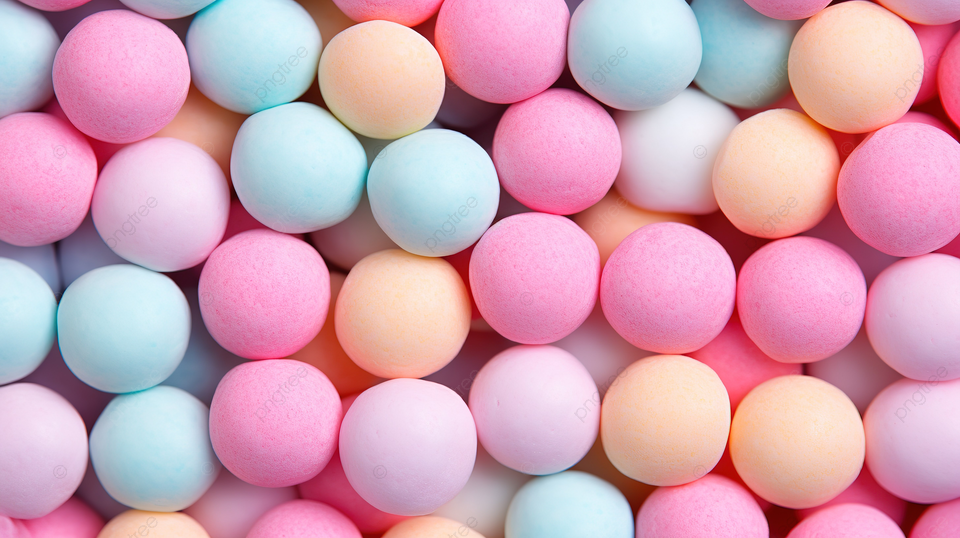
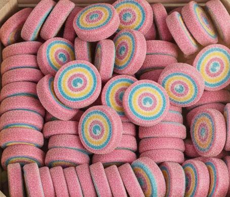
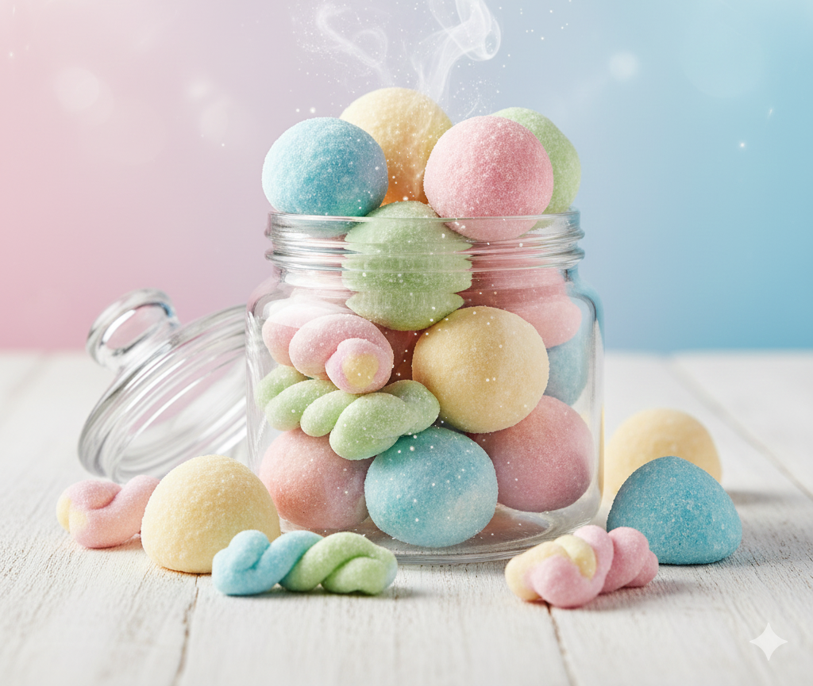
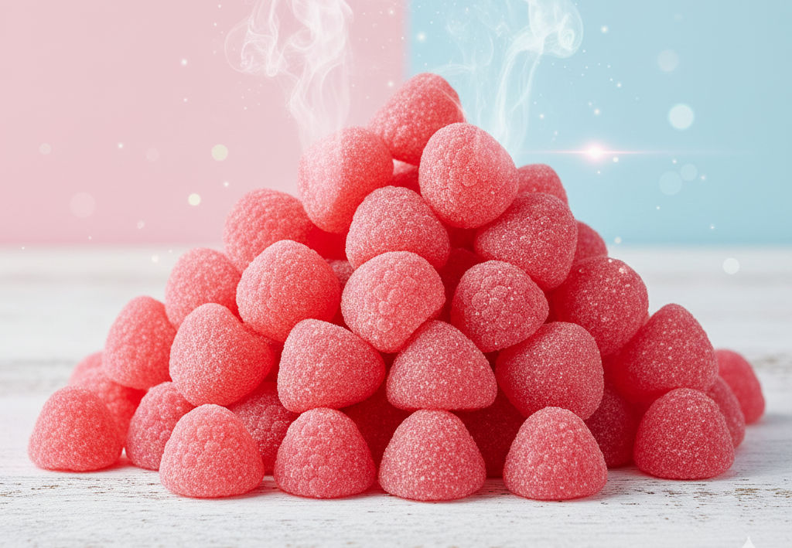
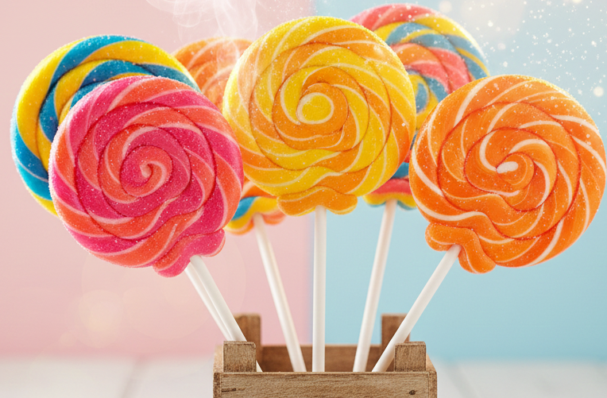
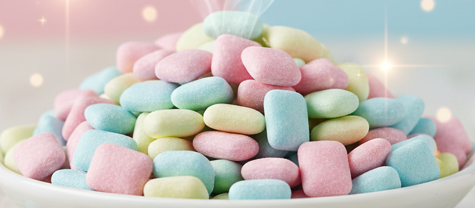

ROSA - CHICLE
CHICLE
UN SABOR DULCE, AROMÁTICO Y DIVERTIDO. EL FAVORITO DE QUIENES BUSCAN ALGO JUGOSO Y CLÁSICO.

DESCRIPCIÓN
El sabor a chicle es icónico: dulce, suave y aromático, con ese toque que recuerda a los clásicos
chicles de feria.
Cada chuche ofrece una experiencia divertida y alegre, perfecta para cualquier amante de los dulces con
personalidad.
CURIOSIDADES SOBRE EL CHICLE
- Uno de los sabores más populares en chicles y caramelos desde los años 80.
- Muy utilizado en gominolas, piruletas y chicles de larga duración.
- El color rosa se asocia con diversión y energía.
- Su aroma es muy reconocible y nostálgico.
PERFIL DE SABOR DETALLADO
| ATRIBUTO |
VALOR |
DESCRIPCIÓN |
| Dulzor |
⭐⭐⭐⭐⭐ |
Dulzor intenso y agradable. |
| Acidez |
⭐ |
Muy ligera, predominando lo dulce. |
| Intensidad aromática |
⭐⭐⭐⭐ |
Aroma dulce y característico de chicle. |
| Suavidad |
⭐⭐⭐ |
Textura agradable y masticable. |
TIPOS DE CHUCHES DE CHICLE
- Caramelos duros: sabor dulce y clásico.
- Chicles: suaves y aromáticos.
- Gominolas rosas: textura masticable y frutal.
- Piruletas: dulces y llamativas.
- Mini chicles: gomitas pequeñas con sabor a chicle.





OPINIONES DE CONSUMIDORES
Olga (★★★★★): “El sabor más dulce y divertido, no me canso nunca.”
Juan (★★★★): “Muy frutal, recuerda a los chicles de la infancia.”
Nora (★★★★★): “Mis favoritas de siempre. Color y sabor irresistibles.”
← Volver al índice